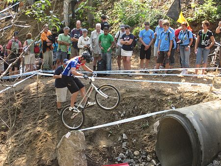
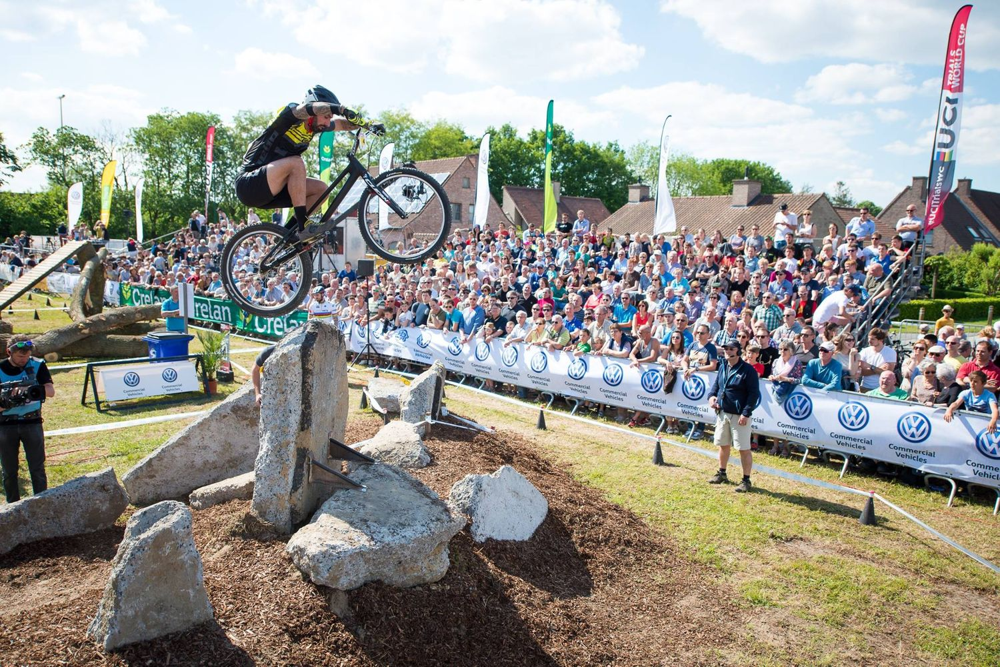
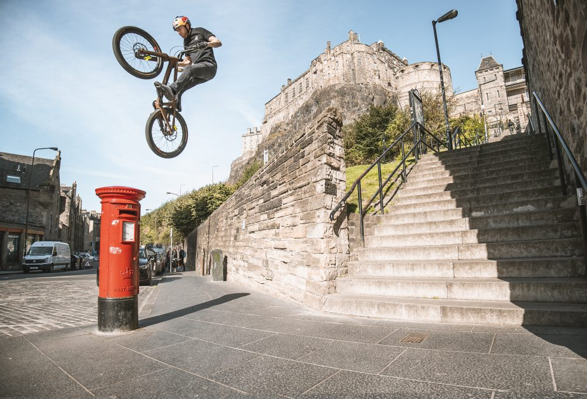
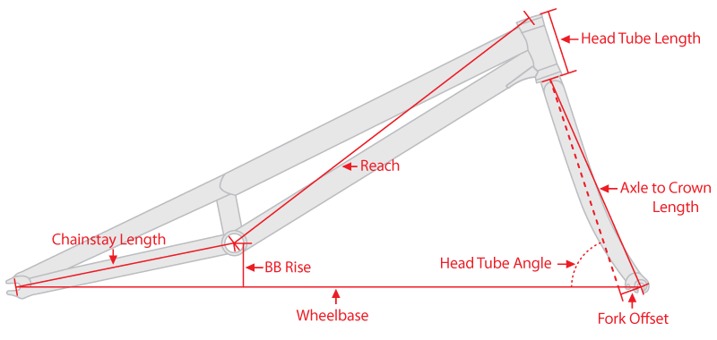

Rules
In a bike trials competition, the general principle is to ride a number of pre-marked sections. Typically, there are two laps of ten sections or three laps of seven sections. The winner is the rider with the fewest points at the end of the competition.
Currently, there are two official types of competition rules enforced by the UCI (Union Cycliste Internationale) and BikeTrial International Union (BIU). The maximum number of points that can be obtained in each section is 5, and the lowest (best) score is 0 points or 'clean'. Points, sometimes referred to as 'dabs', are gained when a rider puts a foot down within a section. Different rules exist for the number of points gained, such as putting both feet down or a hand resulting in 5 points. Exceeding the time limit for the course leads to either 5 points (BIU rules) or an additional point for every 15 seconds over the limit (UCI rules).
UCI
Under UCI rules, a "dab" is given if any part of the bike except the tires touches any object in the course, including shoulders, elbows, and knees. The UCI rules were changed to this format after many competitions ended in a draw, and riders were forced to ride an extra section. UCI rules also allow riders to compete in both mod and stock categories. During a section, neither tire is allowed to cross the side boundary tape, even if the wheel is in the air. The rider's hands must remain on the handlebars. Before beginning a section, a rider is allowed to walk through it and examine all the elements but must not enter it with their bike.

Course Design
According to UCI regulations, a course must consist of at least 14 sections, including repeated sections. At most, two sections can be composed entirely of artificial elements. Both sides of the course are marked with plastic tape, and there must be a clear stretch of 3 meters prior to the finish line to prevent riders from jumping over the line from an obstacle. Maximum obstacle jump heights are specified, ranging from 0.80 to 1.80 meters depending on the category. The sections, each approximately 60 meters in length, are laid out on a circuit to allow riders to move from one section to the next, although the order in which the sections must be completed depends on the individual competition.
Street Trials
Street trials, or freestyle bike trials, is a non-competitive variant that incorporates features found in urban environments. It is the trials equivalent of street skateboarding or street freestyle BMX. Street trials riding is more fluid than competitive trials riding, encompassing the same skills such as precise control of the bike, accurate landing points, jumps, and balancing on narrow obstacles. Riders like Danny Macaskill have mastered riding through urban situations, showcasing their abilities just as we can walk on two feet.
Frame Styles
Trials bikes are often designed without seats as trial riding does not require the rider to sit down. This omission allows for a lighter bike that interferes less with the rider's body movements. For the same reason, most trials frames are as low as possible, with the pedals often higher than the frame above the bottom bracket (BB) at the top dead center. In terms of geometry, trials frames, especially those biased towards competition, tend to have BB spindles positioned significantly higher than the line between the axles.
